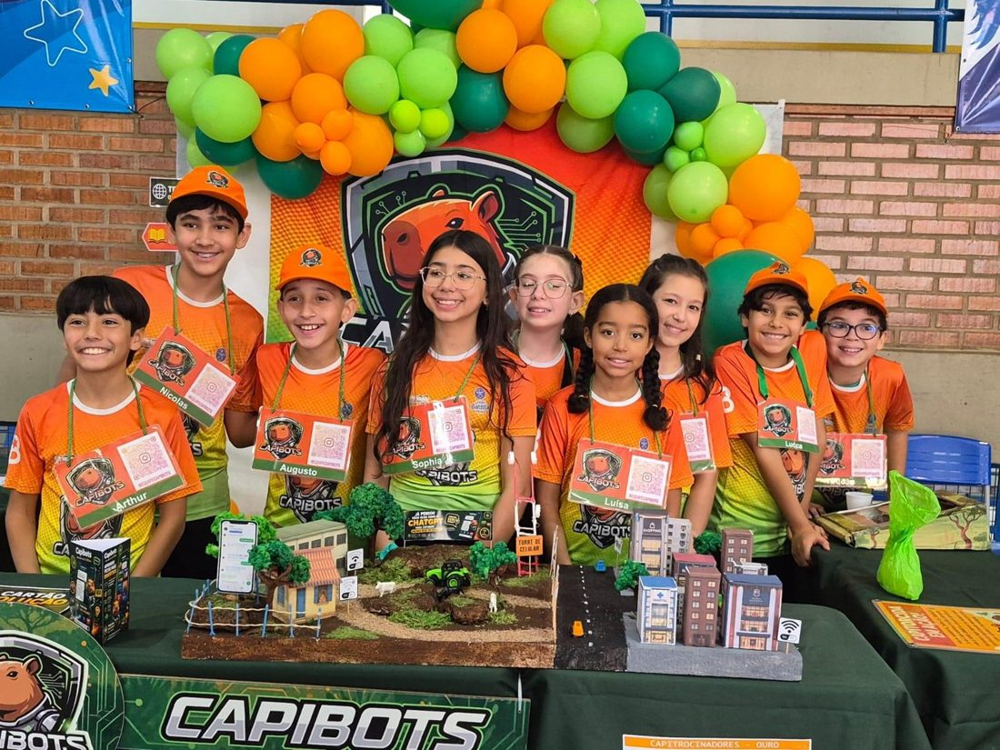
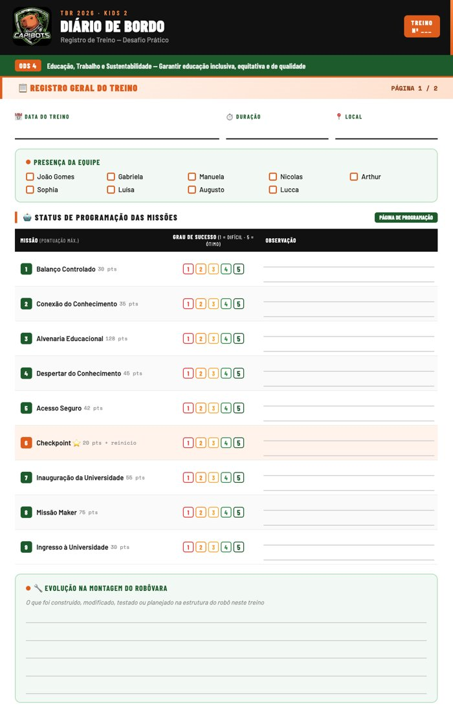
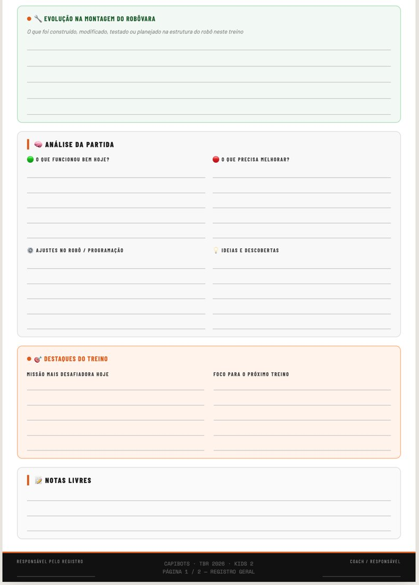
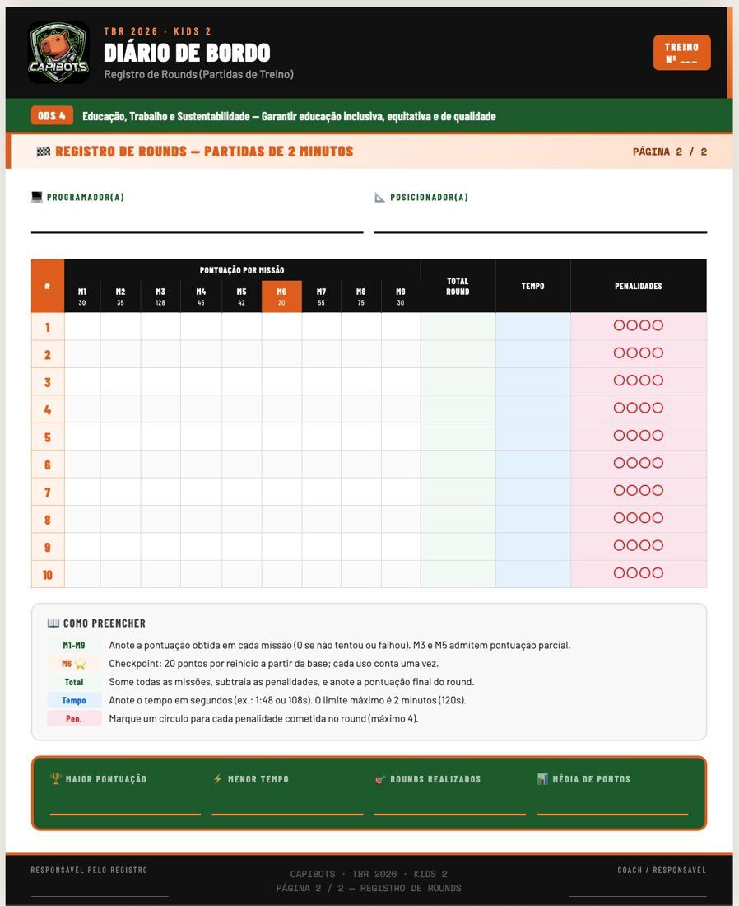
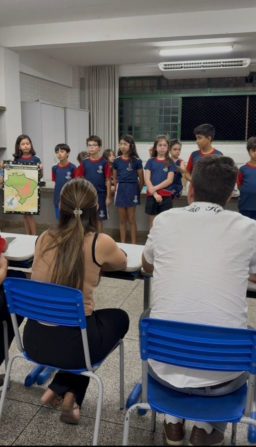
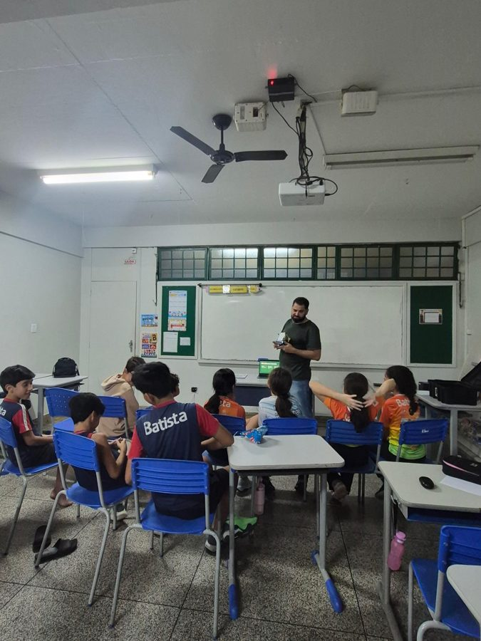
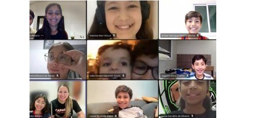
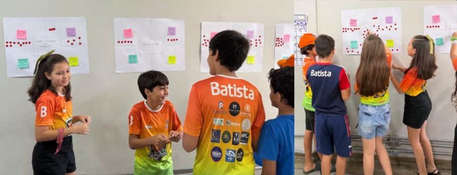
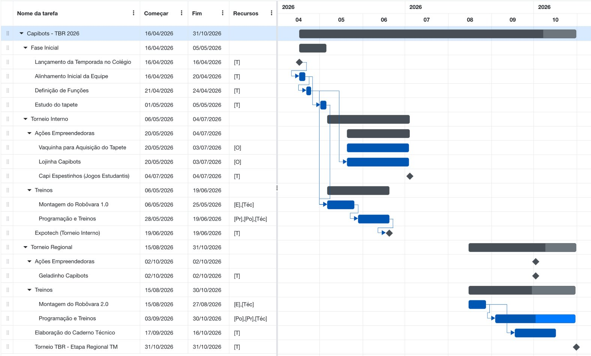
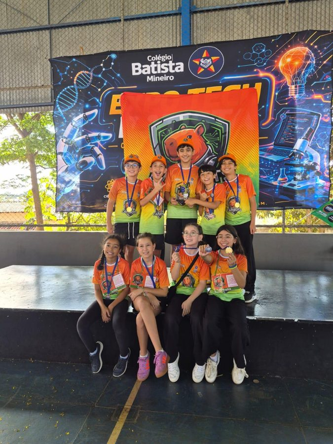

Apresentação
Este caderno conta como a equipe Capibots trabalhou no Desafio Prático da temporada 2026 do Torneio Brasil de Robótica: quem faz o quê, como os treinos foram organizados, como as crianças registram e aprendem com cada tentativa e o que a equipe conquistou até a etapa Regional. O robô da equipe, carinhosamente chamado de Robôvara, ganhou duas versões ao longo do ano, e cada uma delas nasceu do trabalho conjunto de engenheiros, programadores e posicionadores.
1Conheça os Capibots
A equipe começou a ser idealizada em 2024 por Arthur, aluno que acompanhava as conquistas das equipes de robótica do Colégio Batista Mineiro. Em 2025, com o apoio da professora Lorena Costa, nasceu o grupo de nove alunos, hoje no 5º ano do Ensino Fundamental. O nome Capibots e o lema "Unidos como capivaras, espertos como robôs" foram escolhidos em conjunto.
Na estreia, em 2025, a equipe foi campeã geral e do Desafio Prático na etapa interna, 2º lugar geral e 1º lugar no Desafio Prático na etapa Regional, e a 3ª melhor equipe do Brasil na categoria Kids 2, na etapa Nacional em Belo Horizonte. Em 2026, com os mesmos nove integrantes, a Capibots repetiu o 1º lugar geral e no Desafio Prático da ExpoTech, torneio interno do colégio. Em outubro, a pesquisa da equipe foi selecionada para a Feira Ciência Viva, da UFU e do Museu Dica, que será apresentada por Gabriela, Luísa e Sophia.

Fonte: acervo da equipe Capibots (2026).
| Integrante | Função |
|---|---|
| Arthur Henrique Martins Rocha | Posicionador |
| Augusto Diniz Coelho | Engenheiro |
| Gabriela Neri Sticca | Programadora |
| João Gomes Nazareth Souto | Cientista e Engenheiro |
| Lucca Rezende Vieira | Programador |
| Luísa Carvalho de Oliveira | Organizadora |
| Manuela Pereira Moreira de Souza | Posicionadora |
| Nicolas Lima Ribeiro | Programador e Cientista |
| Sophia Arantes Borges | Engenheira e Organizadora |
Fonte: elaborado pelos autores (2026).
Técnica: Lorena Costa Silva (Ciências Biológicas). Mentora: Luciana Rezende Vieira (Ciência da Computação). Patrocinadores: Anjos Colchões, Calixto Negócios Imobiliários, Clínica Orthus Fisioterapia, Farmácia Kalayasa Aushadi, Fieza Corretora de Seguros, iuh! Digital, Rezende Solar, Supermercado Super Frutt e Transbuiatte. Apoio técnico: Carlos Alberto Rosa Coelho e Luciana Arantes Buiati de Jesus (impressão 3D), Suzan Carla Lopes de Lima (desenvolvimento do Capi-Aprende) e Carlos Henrique Alves Vieira (palestra sobre IA).
2Objetivos com o projeto do robô
Para a Capibots, o TBR fortalece a união do grupo e ensina, de forma prática e divertida, planejamento, pesquisa, oratória, pensamento lógico e crítico, criatividade, resiliência, empatia e respeito. Na segunda temporada, a expectativa era aprofundar o que foi aprendido no primeiro ano:
- conhecer novos recursos de programação e organizar melhor o código;
- ganhar precisão nos movimentos do robô;
- explorar materiais além do kit LEGO, como peças próprias feitas em impressora 3D, usada pela primeira vez pela equipe;
- conhecer as soluções de outras equipes e compartilhar experiências com elas.
O kit LEGO SPIKE usado pela equipe é próprio: foi comprado em 2025 com o dinheiro das ações empreendedoras do time de Organização & Método, o que deu às crianças autonomia para treinar com o mesmo equipamento da competição.
3Como o time técnico se organiza
No início da temporada, a técnica Lorena propôs um novo formulário de escolha de funções. Cada integrante refletiu sobre a experiência anterior e decidiu se continuaria na mesma função ou assumiria um novo desafio. Logo depois, cada grupo recebeu suas primeiras tarefas de pesquisa e estudo do tapete da temporada.
| Função | Quem | O que faz |
|---|---|---|
| Engenheiros | Augusto, João Gomes e Sophia | Planejam, constroem e ajustam a estrutura do robô e o objeto da missão Maker |
| Programadores | Gabriela, Lucca e Nicolas | Estudam as missões, programam em blocos, ajustam o código e cuidam da carga de robô e tablet |
| Posicionadores | Arthur e Manuela | Padronizam a saída da base e posicionam o robô no início de cada round e nos retornos |
| Técnica | Lorena | Acompanha os treinos, tira dúvidas de montagem e programação e orienta sobre as regras do TBR |
| Mentora | Luciana | Acompanha a equipe em todas as ações e ajuda a organizar a rotina de trabalho |
Fonte: elaborado pelos autores (2026).
Engenheiros, programadores e posicionadores dividem a mesa de treino e dependem uns dos outros o tempo todo. Quando a estrutura do robô muda, o código precisa ser ajustado; quando surge uma programação nova, ela só vale depois de testada a partir da posição de saída; e o que os posicionadores percebem a cada round volta para as outras duas funções como ponto de partida da melhoria seguinte. É dessa troca que vem o desempenho do Robôvara.
3.1 Quem decide o quê
| Quem | Decide ou faz | Não faz |
|---|---|---|
| Integrantes | Escolhem a estrutura e o design do robô, a programação, a ordem das missões, a posição de saída e quais ideias testar, manter ou descartar | — |
| Técnica (Lorena) | Organiza os treinos, apresenta conceitos e recursos novos quando a equipe pede, tira dúvidas e confere as regras do TBR | Não monta nem programa pelas crianças |
| Mentora (Luciana) | Cuida do calendário, da comunicação com famílias e escola e da organização geral da temporada | Não interfere nas decisões técnicas |
| Famílias | Apoiam a logística dos treinos em casa e atuam como jurados nos ensaios | Não participam da construção nem da programação |
Fonte: elaborado pelos autores (2026).
“Meu papel é fazer perguntas, não dar respostas. Quando uma ideia não funciona, peço que me expliquem por quê, e quase sempre a solução aparece na própria explicação.”
Lorena Costa Silva · Técnica
4Rotina de treinos e método de trabalho
O trabalho no Desafio Prático foi dividido em duas fases, acompanhando o calendário da competição (Quadro 4). Os treinos aconteceram principalmente no colégio, no horário da aula de robótica e além dele, e também em fins de semana na casa de integrantes, o que só foi possível graças ao tapete próprio comprado com patrocínios e ações empreendedoras.
| Fase | Período | Como foi organizada |
|---|---|---|
| Fase 1 · Torneio Interno | 07/05 a 19/06/2026 | Nove encontros de 60 a 90 minutos, em quatro etapas: conhecer o tapete, montar a primeira versão do robô, programar as missões e refinar o posicionamento |
| Fase 2 · Regional e Nacional | 15/08 a 31/10/2026 | Quinze encontros de 90 minutos a 2 horas, no colégio e em alguns fins de semana, em três etapas: reconstruir o robô, reprogramar as missões e refinar posicionamento e tempo de round |
Fonte: elaborado pelos autores (2026).
Fonte: diários de bordo da equipe (2026).
4.1 Diário de bordo
Todo treino é registrado com fotos, vídeos e um diário de bordo criado pela própria equipe, com data, local, objetivo da sessão, participantes, resultados e aprendizados. Há dois modelos: um para treinos comuns e outro para treinos com simulação de rounds. Foi lendo esses registros que a equipe entendeu por que certas soluções falhavam e decidiu o que testar em seguida.

(a) Treino comum: presença e andamento das missões
(b) Treino comum: o que funcionou e o que melhorar
(c) Simulação de roundsFonte: acervo da equipe Capibots (2026).
4.2 Simulação de rounds
Com as programações concluídas, a equipe passou a usar o simulador de rounds do site do TBR. Em cada tentativa, registra quem posicionou o robô, o tempo gasto e como as missões foram cumpridas, e a ferramenta calcula a pontuação pelas regras da temporada, do mesmo jeito que os juízes farão. Isso agilizou a contagem, eliminou erros de apuração e deixou os treinos mais parecidos com uma partida de verdade. Nos registros, a equipe vem mantendo uma pontuação consistente de um treino para outro.
4.3 Ensaios e simulados
O Esquenta TBR, torneio pré-regional, funcionou como um simulado real: as crianças apresentaram o trabalho de Tecnologia & Engenharia, demonstraram o robô e saíram com uma lista clara de melhorias. Nas semanas anteriores à Regional, os pais assumem o papel de jurados em ensaios com muitas perguntas.
4.4 Rotina pré-round: Capi-Pronto
Para que os posicionadores entrem na mesa firmes e seguros, a equipe segue a mesma rotina em todos os rounds, nos treinos e na competição. Repetir os mesmos passos tira a ansiedade do momento e deixa claro o papel de cada um.
Antes do round
- Programadores conferem a carga do robô e do tablet e abrem a programação certa
- Posicionadores conferem os elementos do tapete e a posição de saída combinada
- Todos respiram fundo três vezes juntos
Durante o round
- Só os posicionadores tocam no robô
- Uma única pessoa da equipe fala com eles, com frases curtas e calmas
- O resto da equipe torce sem dar instruções
Depois do round
- Um minuto de conversa: o que funcionou e o que ajustar
- Quem errou recebe apoio, nunca bronca
- O resultado vai para o diário de bordo
Fonte: elaborado pelos autores (2026).
5Vozes e bastidores da equipe
Cada integrante conta, com as próprias palavras, o que aprendeu nesta temporada.
“Aprendi que posicionar é ter calma. Se eu fico nervoso, tudo fica mais difícil.”
Arthur · Posicionador
“Quando a gente reconstruiu o robô, entendi que desmontar também é construir.”
Augusto · Engenheiro
“Programar é testar, errar, ajustar e testar de novo, até dar certo.”
Gabriela · Programadora
“Gosto de ver a pesquisa e o robô conversando: os dois falam de educação.”
João Gomes · Cientista e Engenheiro
“Quando algo dá errado, a primeira coisa que eu faço é olhar o diário de bordo.”
Lucca · Programador
“Mesmo sem mexer no robô, eu ajudo: registro os treinos e cuido para todo mundo saber o próximo passo.”
Luísa · Organizadora
“No começo eu tinha medo de errar na frente de todo mundo. Agora eu respiro, confiro tudo e solto o robô.”
Manuela · Posicionadora
“Uma ideia só vale depois que a gente testa a partir da saída.”
Nicolas · Programador e Cientista
“Neste ano eu quis aprender engenharia e descobri que dá para projetar a própria peça.”
Sophia · Engenheira e Organizadora

Ensaio da apresentação para as famílias
Encontro da equipe no colégio
Reunião online de alinhamento
Decisões em grupo, com post-itsFonte: acervo da equipe Capibots (2026).
6A evolução do Robôvara
A primeira versão do Robôvara foi construída para cumprir parte das missões com agilidade e, junto com o treino no tapete próprio, rendeu o 1º lugar no Desafio Prático da ExpoTech. A competição também mostrou pontos que podiam melhorar, e cada problema anotado no diário de bordo virou uma tarefa para a versão seguinte.
Para a Regional, com mais tempo para testar estratégias e o objetivo de realizar todas as missões, a equipe decidiu reconstruir o robô por completo. A versão 2.0 reuniu os aprendizados da fase anterior, novas técnicas de programação estudadas pelas crianças e, pela primeira vez, peças projetadas pela própria equipe. Se a Capibots se classificar para a Nacional, o plano é partir do que for observado na Regional e intensificar os treinos.
7Cronograma
O planejamento foi dividido em três grandes fases (Figura 4):
- Fase inicial (16/04 a 05/05): lançamento da temporada no colégio, alinhamento da equipe, definição de funções e estudo do tapete;
- Torneio Interno (06/05 a 04/07): montagem do Robôvara 1.0, programação e treinos, ExpoTech em 19/06 e ações para comprar o tapete (vaquinha, lojinha e Capi-Espetinhos);
- Torneio Regional (15/08 a 31/10): depois das férias de meio de ano, montagem do Robôvara 2.0, programação e treinos, Geladinho Capibots e elaboração do caderno técnico.

Fonte: acervo da equipe Capibots (2026).
8Resultados
Na ExpoTech, a equipe montou maquete e estande, apresentou sua solução e disputou o Desafio Prático. Conquistou o 1º lugar geral e o 1º lugar no Desafio Prático, repetindo o resultado do ano anterior, e garantiu a vaga na etapa Regional. Mais do que os troféus, as famílias e a técnica perceberam crianças mais experientes, organizadas e autônomas do que na primeira temporada.

Fonte: acervo da equipe Capibots (2026).
| Temporada | Etapa | Resultado |
|---|---|---|
| 2025 | Interna | 1º lugar geral e 1º lugar no Desafio Prático |
| 2025 | Regional | 2º lugar geral e 1º lugar no Desafio Prático |
| 2025 | Nacional (Belo Horizonte) | 3º lugar geral na categoria Kids 2 |
| 2026 | ExpoTech (interna) | 1º lugar geral e 1º lugar no Desafio Prático |
| 2026 | Feira Ciência Viva (UFU) | Trabalho de pesquisa selecionado para apresentação |
Fonte: elaborado pelos autores (2026).
9Aprendizados da temporada
Parte do que a equipe aprendeu em 2026 vale para qualquer robô que ela construir daqui em diante:
- quando o robô perde a referência no tapete, voltar à base e reposicioná-lo é mais seguro do que arriscar;
- uma ideia que funciona nos testes só deve ser adotada depois de conferida no Vade Mecum;
- quando a estrutura do robô muda, toda a programação precisa ser revista e testada, inclusive as partes que parecem não ter sido afetadas;
- o diário de bordo é a memória da equipe: sem ele, seria difícil entender por que algo falhou;
- quando o kit não resolve, é possível projetar as próprias peças.
Para as próximas temporadas fica, sobretudo, o jeito de trabalhar que as crianças construíram neste ano: elas mesmas propõem as soluções, testam na mesa e registram o resultado antes de mudar o robô.